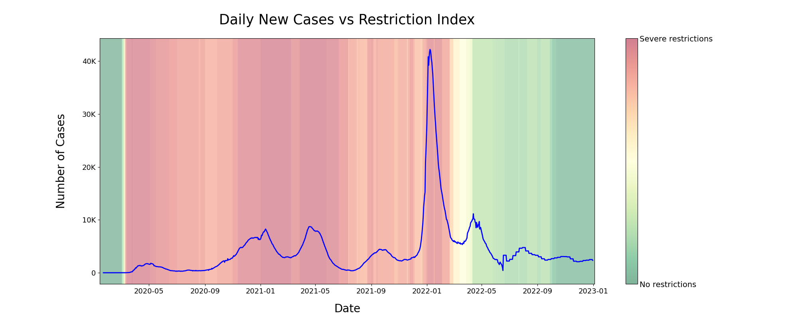

1 / 11
2 / 11
Source: https://github.com/owid/covid-19-data/blob/master/public/data/owid-covid-data.csv
3 / 11
4 / 11
Source: https://github.com/owid/covid-19-data/blob/master/public/data/owid-covid-data.csv
5 / 11
Source: https://github.com/owid/covid-19-data/blob/master/public/data/owid-covid-data.csv
6 / 11
7 / 11
8 / 11
Source: https://health-infobase.canada.ca/src/data/covidLive/vaccination-administration.csv
9 / 11

Source: https://github.com/OxCGRT/covid-policy-tracker/blob/master/data/OxCGRT_nat_latest.csv
10 / 11

Source: https://github.com/OxCGRT/covid-policy-tracker/blob/master/data/OxCGRT_nat_latest.csv
11 / 11

Source: https://www150.statcan.gc.ca/t1/tbl1/en/tv.action?pid=2410005001